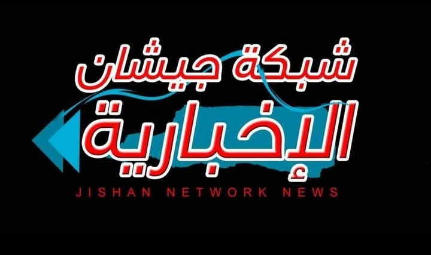

أهلاً بكم في الميدان الجنوبي
>نرحب بكم في صحيفة الميدان الجنوبي الإلكترونية. نسعى لتقديم تغطية إخبارية مهنية ومستقلة تخدم قضايا الجنوب والوطن العربي.
الميدان الجنوبي: منبر الكلمة الحرة والرأي المستقل.

صوت الجنوب الحر - صحيفة إلكترونية مستقلة
رئيس التحرير
الصحفي أبوبكر المنصوري
نرحب بكم في صحيفة الميدان الجنوبي الإلكترونية. نسعى لتقديم تغطية إخبارية مهنية ومستقلة تخدم قضايا الجنوب والوطن العربي.
الميدان الجنوبي: منبر الكلمة الحرة والرأي المستقل.
تابعوا معنا آخر المستجدات السياسية على الساحة المحلية والإقليمية والدولية. تحليلات معمقة وتقارير خاصة.
نغطي لكم أهم الأحداث في عدن، حضرموت، شبوة، أبين، لحج، الضالع، المهرة وسقطرى.